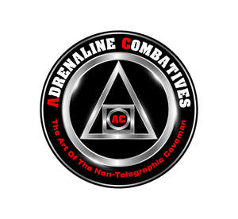

Trade Mark Journal No.2025/009 28 February 2025
UK00004160985 16 February 2025 (9,41)

- Class 9
- Safety clothing for protection against accident or injury; Headgear for protection against injury; Safety, security, protection and signalling devices; Surge protection apparatus; Protection devices for personal use against accidents; Gloves for industrial purposes for protection against injury; Clothing for protection against accidents; Insulated clothing for protection against accident or injury; Safety gloves for protection against accident or injury; Gloves for protection against injury; Face guards for protection against accident or injury; Shields for protecting the body against injury; Skull guards for protection against injury; Protective clothing for the prevention of injury; Gloves for protection against accidents; Boxing helmets; Mouth guards for boxing; Karate head guards; Sports training simulators; Downloadable video recordings; Downloadable videos; Downloadable video files; Downloadable educational course materials; Downloadable video recordings featuring music; Downloadable videocasts; Downloadable podcasts; Downloadable movies; Downloadable digital photos; Video recordings; Downloadable films; Downloadable e-books; Downloadable educational media; Video discs; Digital video discs; Pre-recorded videos; Downloadable image files; Downloadable posters; Training manuals in electronic format; Instruction manuals in electronic format; Downloadable instruction manuals in electronic form; Training guides in electronic format; Training manuals in the form of a computer program; Media content; Media streaming software; Media software; Digital recording media; Digital data recording media.
- Class 41
- Gym activity classes; Exercise classes; Teaching at junior high schools; Teaching at elementary schools; Arranging of classes; Conducting of classes; Educating at senior high schools; Conducting fitness classes; Providing courses of instruction at high school level; Exercise and fitness classes; Conducting classes in exercise; Providing courses of instruction at college level; Conducting classes in weight reduction; Arranging and conducting of day school courses for adults; Conducting distance learning instruction at the college level; Conducting distance learning instruction at the graduate level; Education services in the nature of courses at the university level; Providing courses of instruction at post-graduate level; Production of course material distributed at vocational lectures; Conducting distance learning instruction at the university level; Production of course material distributed at professional lectures; Conducting physical fitness conditioning classes; Arranging and conducting of classes; Production of course material distributed at vocational seminars; Conducting distance learning instruction at the primary level; Production of course material distributed at vocational courses; Production of course material distributed at professional seminars; Production of course material distributed at professional courses; Conducting distance learning instruction at the secondary level; Production of course material distributed at management lectures; Educating at university or colleges; Pre-school teaching; Educational services provided by senior high schools; Tuition in gymnastics; Rental of equipment for use at gymnastic events; Production of course material distributed at management courses; Instruction in group exercise; Production of course material distributed at management seminars; Producing and conducting exercises for music classes and programmes; Movement tuition for pre-school children; Night clubs; Training of teachers; Teacher training services; Rental of equipment for use at athletic events; Training of sports teachers; Arranging for students to participate in educational courses; Karate instruction; Teaching academy services; Conducting training sessions on physical fitness online; Correspondence school services; Pre-school education; Provision of courses of instruction in self awareness; Conducting workshops and seminars in self awareness; Vocational education relating to self-defence; Vocational education relating to protection of personal property; Physical fitness centre services; Physical fitness assessment services for training purposes; Personal development training; Consultancy relating to physical fitness training; Education services relating to the development of childrens' intellectual faculties; Personal fitness training services; Physical fitness consultation; Education services relating to physical fitness; Training and instruction; Conducting of instructional seminars; Seminars; Instruction; Conducting courses, seminars and workshops; Arranging of courses of instruction; Educational instruction; Educational seminars; Providing courses of instruction; Education and instruction; Arranging technical instruction courses; Instruction in circuit training; Provision of courses of instruction; Courses of instruction (Provision of -); Self-awareness courses [instruction]; Conducting training seminars; Arranging of workshops and seminars; Educational services for providing courses of instruction; Conducting instructional courses; Providing online courses of instruction; Providing online training seminars; Workshops for training purposes; Instruction services; Keep-fit instruction; Instruction courses relating to health; Arrangement of training courses in teaching institutes; Organisation of training seminars; Conducting workshops and seminars in personal awareness; Conducting training seminars for clients; Educational establishments providing courses of instruction (Services of -); Education and instruction services; Organising of educational seminars; Organising of education seminars; Conducting workshops [training]; Providing computer assisted courses of instruction; Arranging professional workshop and training courses; Arranging of seminars relating to training; Conducting of instructional seminars relating to time management; Arranging and conducting of seminars and workshops; Arranging and conducting of workshops and seminars; Exercise instruction; Arranging and conducting of workshops and seminars in self-awareness; Conducting seminars; Arranging and conducting of training seminars; Jujitsu instruction; Judo instruction; Organisation of educational seminars; Instructional and training services; Written training courses; Arranging and conducting of educational seminars; Organisation of seminars relating to training; Training courses; Planning of seminars for educational purposes; Instruction courses relating to physical fitness; Instruction courses relating to sporting activities; Gymnastic instruction; Physical education instruction; Hapkido instruction; Publication of educational and training guides; Arranging of seminars; Gymnastics (Instruction in -); Gymnastics instruction; Instruction in gymnastics; Conducting of seminars and congresses; Boxing instruction; Arranging of seminars relating to education; Education, teaching and training; Conducting of educational courses; Taekwondo instruction; Arranging of training courses; Arrangement of seminars for educational purposes; Arranging and conducting of lectures for training purposes; Preparation of educational courses and examinations; Provision of courses of instruction relating to sport; Organisation of continuing educational seminars; Workshops for educational purposes; Instruction in sports; Arranging and conducting of training workshops; Workshops (Arranging and conducting of -) [training]; Arranging and conducting of workshops [training]; Conducting of instructional, educational and training courses for young people and adults; Providing courses of training; Provision of training courses; Training courses (Provision of -); Sports tuition, coaching and instruction; Arranging and conducting conferences and seminars; Organising of educational lectures; Organisation of seminars and conferences; Entertainment, education and instruction services; Vocational training courses (Provision of -); Training in martial arts; Instruction in martial arts; Martial arts instruction; Teaching of chinese martial arts; Aerial fitness instruction; Meditation training; Health and fitness training; Training; Physical fitness instruction; Operating of martial arts' schools; Entertainment in the nature of boxing contests; Aikido instruction; Kendo instruction (Japanese fencing instruction); Education, entertainment and sport services; Entertainment in the nature of wrestling contests; Entertainment in the nature of esports competitions; Entertainment, sporting and cultural activities; Entertainment services in the nature of competitions; Organisation of events for cultural, entertainment and sporting purposes; Organization of boxing matches; Organization of sumo- wrestling competitions; Organisation of wrestling contests; Sports and fitness; Sports training; Training in sports; Sports and fitness services; Video recordings [not downloadable] provided from the internet; Providing on-line videos, not downloadable; Providing online videos, not downloadable; Providing on-line non-downloadable video content; Providing online images, not downloadable; Publication of training manuals; Computerised training; Provision of online training; Educational services for teaching manual writing; Developing educational manuals; Publication of manuals; Provision of online tutorials; Organisation of training courses; Practical training; Practical training services; Organization of seminars; Production of video tapes for corporate use in corporate educational training; Organisation of seminars.
Julien Masson